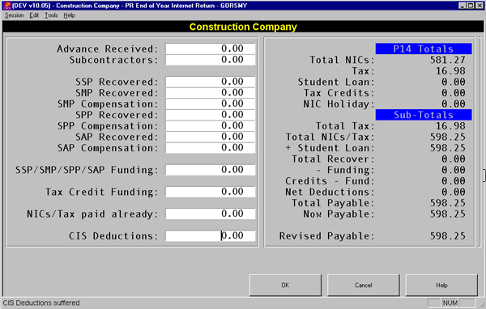

Additional figures such as Funding Received for Tax Credits should be entered. Note that fields may be inaccessible if inappropriate, such as SAP Recovered is not accessible if the total SAP paid is zero, or if you have configured the SAP-REC parameter to populate this value from a pay item.
The Total values from P14 in the submission are shown on the upper right hand of the screen. Subtotals - as filled in on the manual P35 - are shown below the form P14 totals.
